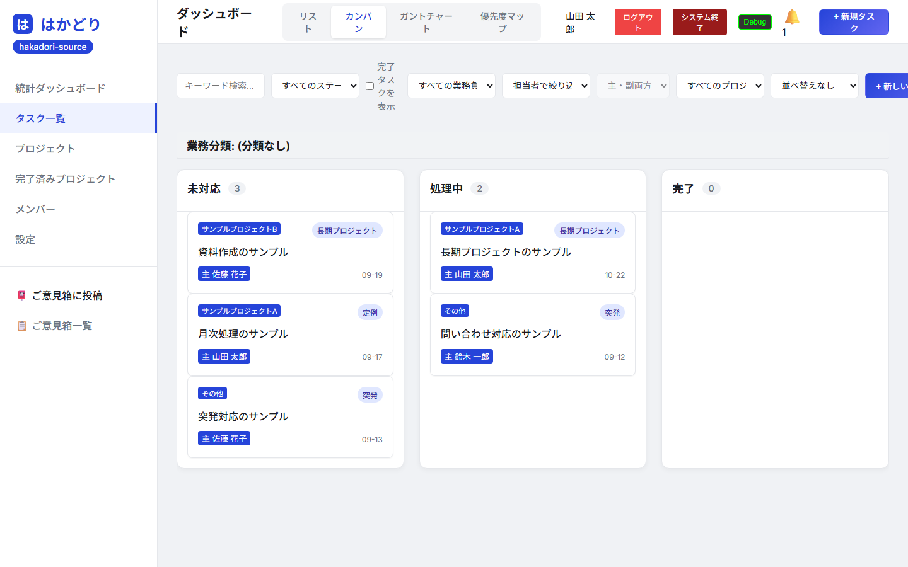
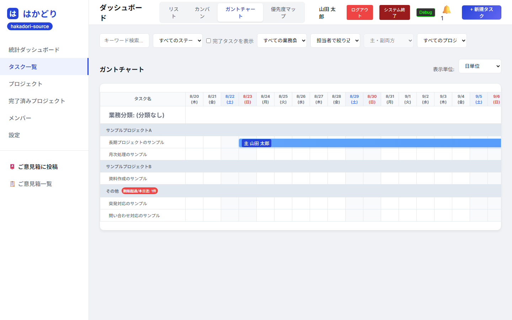
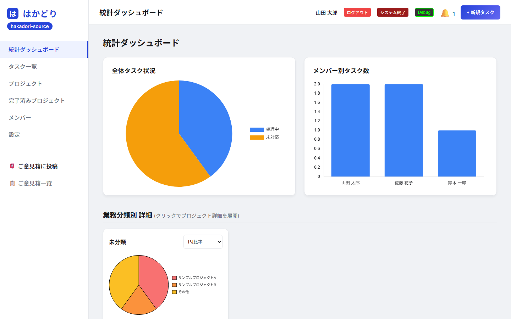

はかどり
小さなチームのためのタスク管理ツールです。インストール不要、 データを外に出しません。Gear Bloom が開発し、無料で配布しています。

「急な仕事に追われて、本来の仕事が進まない」を見えるようにする
はかどりは、タスクを 長期プロジェクト／定例／突発 の3種類に分けて扱います。 1日の終わりに「今日は突発ばかりだった」と分かること自体が、次の週の組み立てを変えます。 タスク管理ツールは数多くありますが、この分け方を軸にしたものは意外と多くありません。
データが外に出ない
サーバーはご自身のPCの中だけで動きます。入力した内容がインターネットに送信されることは一切ありません。 社外に出せない情報を扱う場合でも使えます。
共有フォルダで数人まで
ファイルを共有フォルダに置けば、同じ画面を見ながら数人のチームで使えます。 アカウント登録もクラウド契約も要りません。
バックアップはコピーだけ
データは task_manager.db というファイル1つです。
バックアップはこのファイルをコピーするだけで済みます。
できること
4つの見方でタスクを眺める
同じタスクを、リスト・カンバン・ガントチャート・優先度マップの4通りで見られます。 期日が近いものは色が変わります。


状況を数字で把握する
全体の進み具合、メンバーごとの持ち件数、業務分類ごとの内訳をグラフで表示します。

そのほか
| サブタスク・複数担当者 | 1つのタスクを分割したり、主担当と副担当を分けたりできます |
| コメント | タスクごとにやり取りを残せます。絵文字リアクションも付けられます |
| 添付ファイル | 仕様書や画像をタスクに紐づけて保存できます |
| デスクトップ通知 | 期限が近いタスクを常駐アプリがお知らせします |
| 祝日対応 | 内閣府の祝日CSVを取り込み、営業日ベースで期限を計算します |
| 週報の自動作成 | その週の実績から週報の下書きを作ります。AIなしでも動きます |
| ステータスの追加 | 「未対応・処理中・完了」以外の段階を自由に足せます |
ダウンロード
機能制限はありません。全機能をそのままお使いいただけます。 MITライセンスで公開しているため、社内での利用・改変も自由です。
はかどりにはログイン認証の仕組みがありません。ご自身のPCや社内LANなど、 信頼できるネットワーク内でのご利用を想定しています。 インターネットに直接公開しないでください。
また、画面を広く使う設計のため、横幅1400px以上のディスプレイでのご利用を推奨します。 タブレットやスマートフォンには対応していません。
自社向けの作り替えも承ります
「項目を自社の言い方に変えたい」「この帳票の形式で出力したい」「不要な機能を減らして、 もっと簡単にしたい」——そういったご相談は有償で承ります。 はかどりそのものは無料ですので、まずは実際に触ってみて、 足りない部分が見つかったらご相談ください。
| 内容 | 金額目安 |
|---|---|
| 項目名の変更・不要機能の削除など、軽微な調整 | 1万円台 〜 |
| 機能追加・帳票出力の追加など | 3万円 〜 10万円程度 |
※ 内容によって前後します。正式にご依頼いただく際に改めてお見積りします。